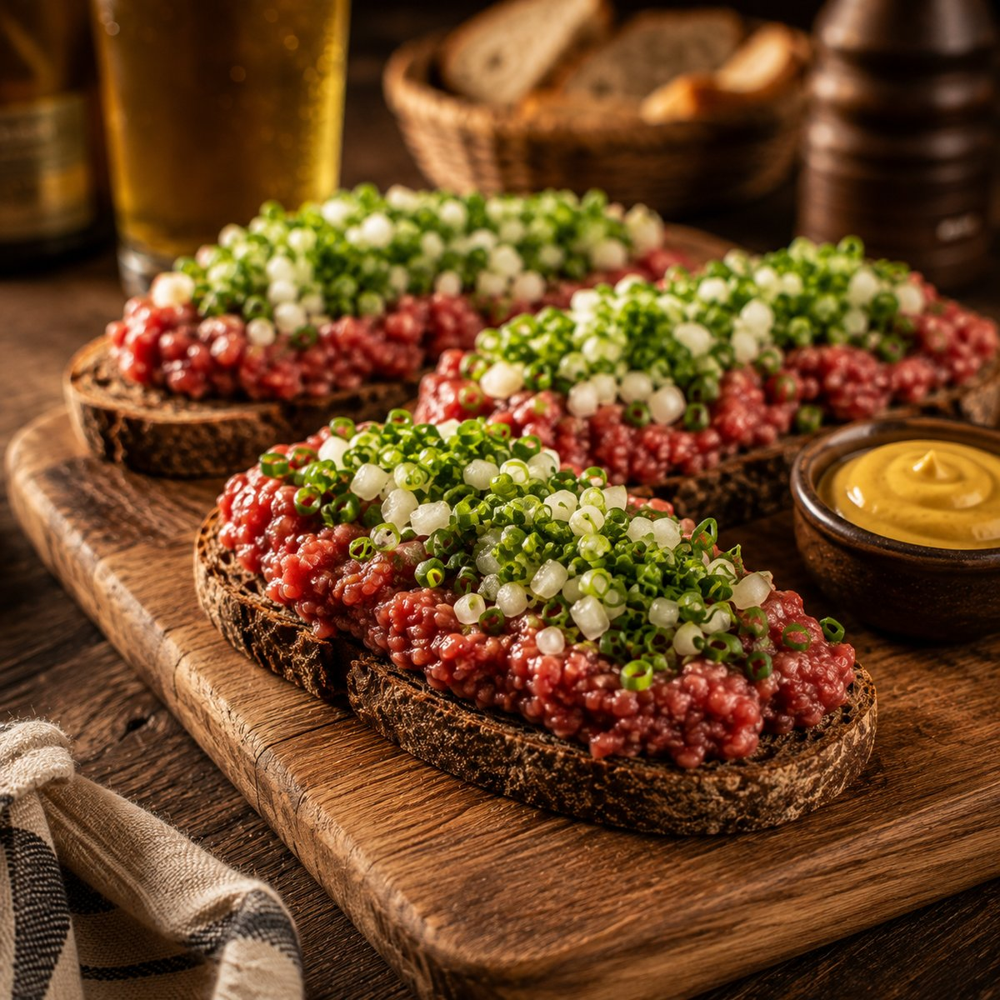
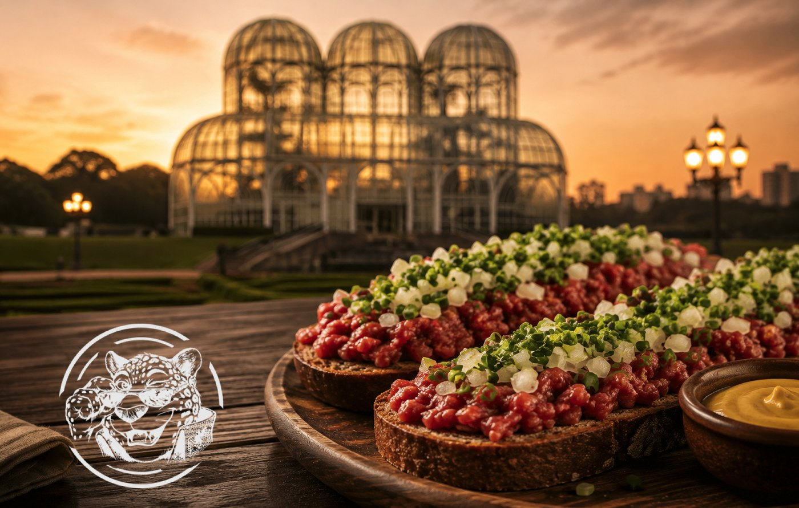

O petisco que é patrimônio da cidade: broa de centeio, carne fresca moída na hora, cebolinha, cebola e tempero. Dez anos no balcão do Ushuaia — agora na sua mesa.
Pedir no WhatsAppEm dez anos de balcão, eu vi muita gente pedir e ter que recusar. Celíaco, vegano, vegetariano. Sempre me incomodou — o prato é de Curitiba, e Curitiba é de todo mundo. Então eu fiz de outro jeito.

Como sempre foi feita: 200 g de carne bovina fresca — patinho —, cebola, cebolinha verde, sal e pimenta do reino. Acompanha broa de centeio, mostarda escura e azeite de oliva.
200 g de patinho temperado com páprica, sal, azeite de oliva e cachaça orgânica. Acompanha broa de castanha ou centeio, mostarda escura e azeite.
200 g de proteína 100% vegetal com o mesmo tempero da casa — páprica, sal, azeite e cachaça orgânica. Acompanha broa de castanha ou centeio, mostarda escura e azeite. Sem nenhum ingrediente de origem animal.
[composição — confirmar com o César]
Em maio de 2025, o INPI reconheceu a Carne de Onça com a Indicação Geográfica de Curitiba — o mesmo tipo de registro que o queijo da Canastra e o café do Cerrado têm. É o documento que diz, oficialmente, que este prato é daqui.
E mesmo assim tem muito curitibano que nunca provou. Entenda o que é Indicação Geográfica →
Foram dez anos de Ushuaia. Muita música, muita gente, muita noite. Muita gente me pergunta o que aconteceu e o que eu estou fazendo agora.
Eu reinventei. Peguei o petisco que eu servia no balcão há dez anos e resolvi levar até a sua casa — feito na hora, do jeito que tem que ser, e com versão para quem sempre teve que dizer "eu não posso comer".
Não é bar. Não é show. Mas é bem curitibano.
Tradicional, Ushuaia, vegana ou vegetariana — e a broa, comum ou sem glúten.
Um toque abre a conversa direto. Se preferir aplicativo, estamos no iFood e no 99Food.
Chega montado ou com os ingredientes separados, do jeito que você preferir.
Broa de centeio, carne bovina crua moída na hora e o tempero que faz a diferença.
O mesmo registro do queijo da Canastra, aplicado a um petisco de boteco curitibano.
Dez anos vendo gente ter que dizer "eu não posso comer" — e como a gente resolveu.
Carne de Onça é a primeira coisa que um visitante ouve falar quando pergunta o que comer em Curitiba — e o que ele mais tem dificuldade de encontrar. Atendemos hotéis, pousadas e eventos com formato e volume combinados.